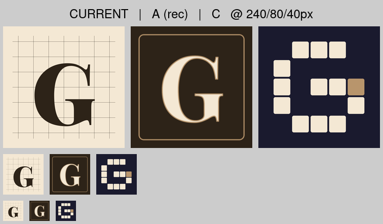
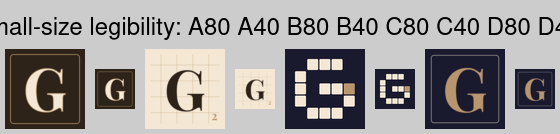
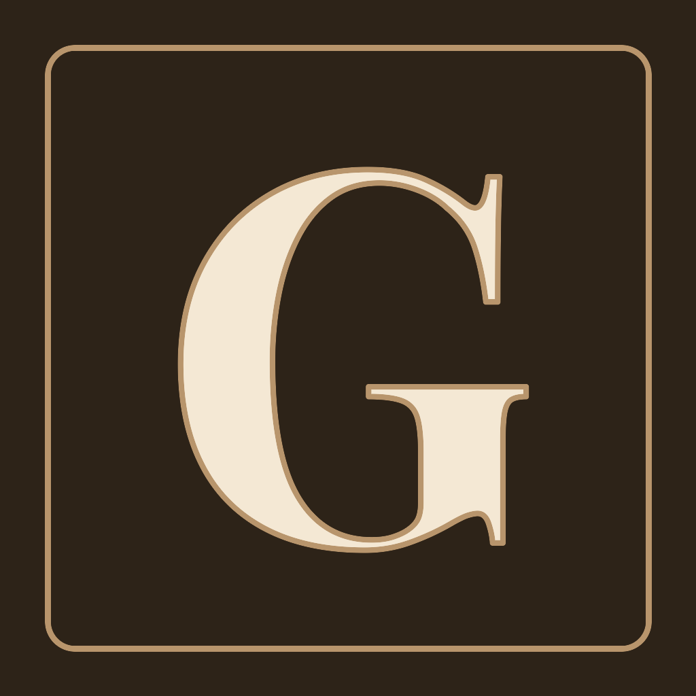
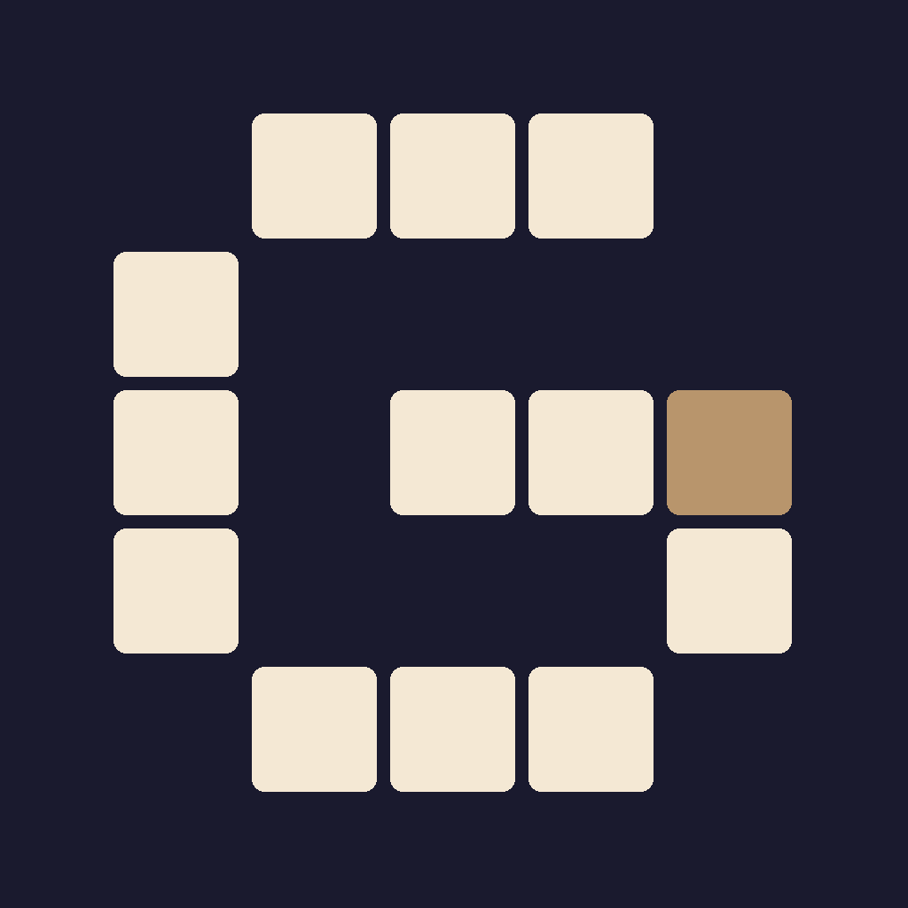
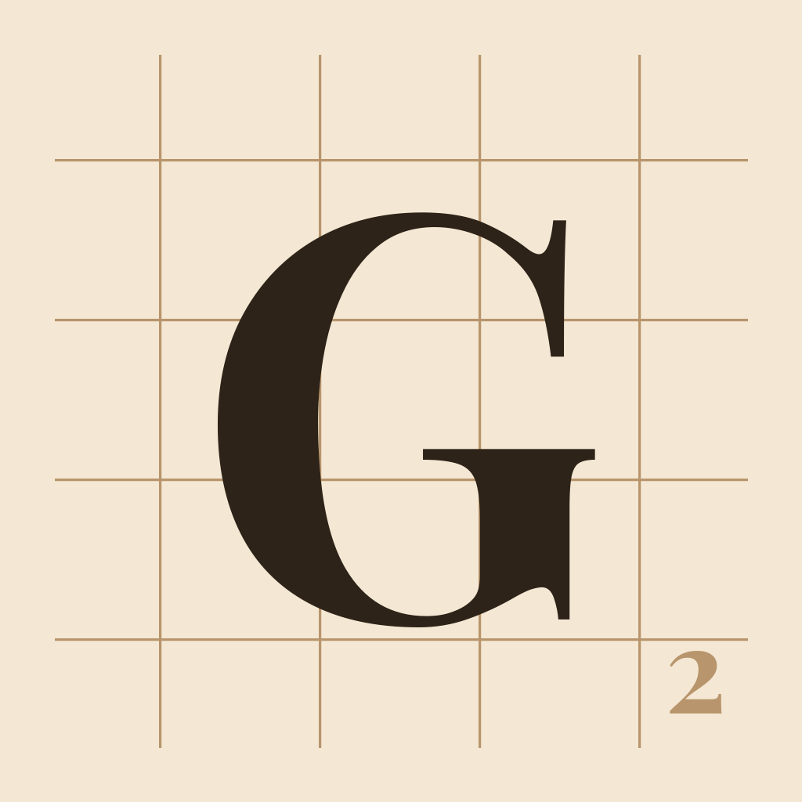
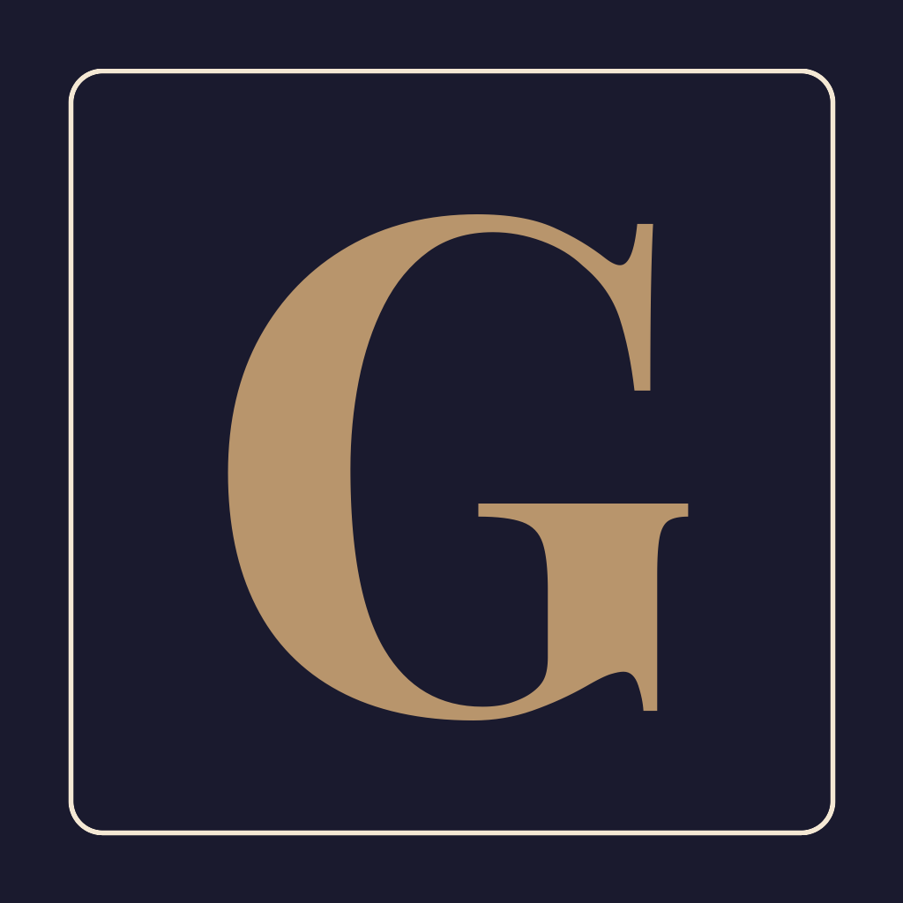
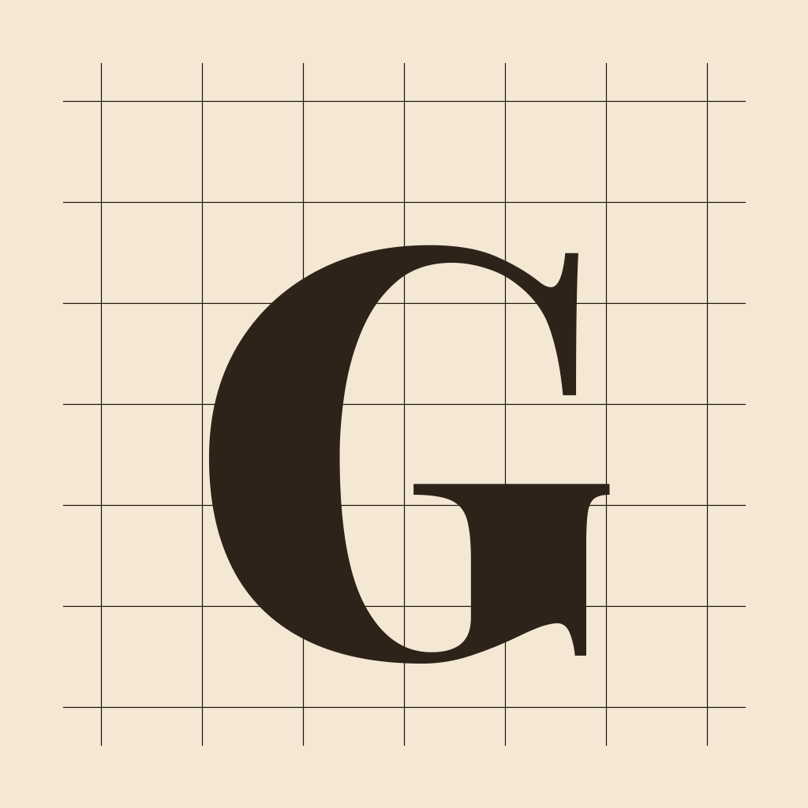

GAZETTLE — Icon Candidates
Before / After (current | A | C) @ 240/80/40

Small-size legibility test

A — dark tile (recommended)

C — crossword block-G

B — Scrabble tile

D — brass G

Current
